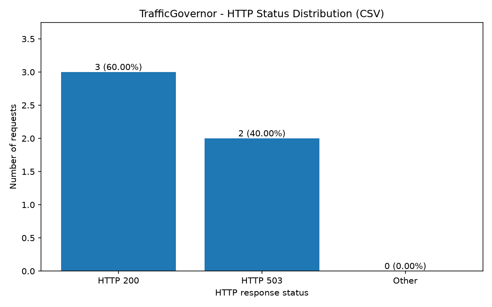
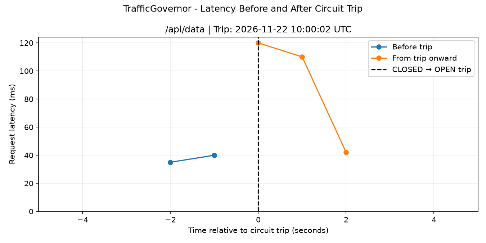

TOTAL REQUESTS
-
Live API requests since server startup
Traffic intelligence. Clear decisions.
Understand every request. Tune your limits.
Respond to traffic spikes with confidence.
Explore the interface using synthetic traffic data.
HTML/CSS prototype. No account or password is required.
Live API request statistics from the TrafficGovernor backend.
Live API requests since server startup
Requests allowed by the active rate-limit policy
—
Live server processing latency
Illustrative request volume by interval
Six illustrative intervals; this is not the complete 24-hour dataset.
ACTIVE ALGORITHM
Applied to checkout-gateway-v1
Token availability is tracked separately for each client. Use the Traffic Simulator to test the active policy.
Edit policy →Every valid /check decision is stored since backend startup. HTTP 200 means allowed; HTTP 429 means rate limit exceeded.
| Client | Endpoint | Decision | HTTP status | Latency | Time |
|---|---|---|---|---|---|
| No live request data loaded yet. | |||||
Loading request history...
Choose Token Bucket or Sliding Window, then save the active policy.
Unauthorized: Network Ops cannot edit policies. Switch to Infrastructure Engineer to edit settings.
Maximum burst capacity per client
Refill rate: — tokens/second
Current settings retrieved from the TrafficGovernor API.
Compare allowed and denied requests before changing a limit.
Open Traffic Simulator →Send live API requests and inspect the rate-limit decisions returned by TrafficGovernor.
Token Bucket tracks tokens separately per client. Requests without available tokens receive HTTP 429.
All valid /check decisions since server startup, newest first.
Loading request history...
Live API request statistics since server startup. Request volume and latency charts remain illustrative.
Requests
0 Live API requestsAllowed
0 0% of total requestsDenied
0 0% of total requestsAvg. latency
-- ms Live DataSelected illustrative intervals, not all 12,480 requests.
Share of evaluated API requests
Allowed 0.0% · 0
Denied 0.0% · 0
Live statistics since the backend started.
Average API processing latency per minute, measured by the Python backend.
Waiting for live traffic insights...
Live per-client statistics since backend startup. Search, filter, sort and export recorded metrics.
| Client ID | Total | Allowed | Denied | Deny Rate | Action |
|---|---|---|---|---|---|
| Waiting for client data... | |||||
No requests yet. Send a first test burst.
Open simulatorNo clients match these filters.
Summarize traffic behavior and review recommendations for your demo environment.
Live client statistics since backend startup. Search, filter, sort and export the recorded metrics.
Total requests
Denied requests
Average latency
— requests recorded since server startup.
— requests denied since server startup.
Average API processing latency: — ms.
Review repeated HTTP 429 decisions.
Run a burst simulation before policy changes.
Compare latency across endpoints.
All valid decisions recorded since backend startup, newest first.
| ENDPOINT | DECISION | STATUS | LATENCY | INTERPRETATION | TIME |
|---|---|---|---|---|---|
| Waiting for live request data... | |||||
Loading request history...
The limiter summary above uses 200/429 decisions. The separate trace sample below uses 200/503 responses around a simulated circuit trip. Charts are static placeholders for future pandas/matplotlib output.
Analysis of synthetic CSV request traces.

Average latency around an observed circuit trip.

Separate synthetic trace · 1,000 responses
Response count (scale: 0–1,000)
80% successful responses; 20% service-unavailable responses. These are not rate-limit denials.
Sample mean before: 120 ms; after: 15 ms. In this example, lower latency reflects fast failures after the circuit opens, not a service recovery.
Understand the algorithms and the limits of this prototype.
Each client has a bucket with a maximum capacity. Tokens refill over time. An allowed request consumes one token; when none remain, the limiter returns 429 with a retry time.
Count a client's requests within the most recent time window. Allow a request while the count is below the limit; remove old timestamps as time moves forward.
index.html and index.css in the same folder.index.html in a browser, or use VS Code Live Server.Start the limiter with the command documented in your backend README. Connect the policy, request and metrics controls to the actual server routes. Run the analysis script on the sample CSV and replace the report placeholders with its generated charts. Exact commands depend on your backend filenames and configuration.
Educational, single-process prototype with synthetic traffic. It does not use Redis, Envoy, distributed enforcement or real production traffic. There is no authentication, live API connection, CSV export or role enforcement in this HTML/CSS version.
The role selector is a disabled preview. When integrated, Network Ops should be able to review metrics but not change policies; permissions also need enforcement by the server.